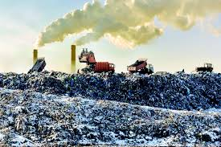
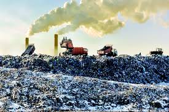

Plastic Production Journey
1. Extraction: Fossil fuels extracted from the earth.
2. Manufacturing:Conversion into plastic resins.
3. Formation:Molded into various shape.
4. Distribution:Shipped and sold to consumers.
5. Disposal:Often ends up in landfills or oceans.
Journey to Ocean
The journey of plastic to the ocean begins with human consumption. Plastic products, such as bottles, bags, and packaging, are used widely due to their convenience and low cost.
As waste management systems struggle to keep up with the growing volume of plastic waste, many plastic items are either littered in urban areas or blown by the wind into waterways.
Once in the ocean, plastic can drift for miles, creating vast areas of floating debris known as garbage patches.
Effects on Wildlife
Plastic pollution has severe consequences for wildlife across the globe.
Many marine animals, such as turtles, seabirds, and whales, often mistake plastic debris for food. This can lead to ingestion, which causes blockages in the digestive tract, malnutrition, and often death.
Additionally, many animals become entangled in discarded fishing nets, six-pack rings, and other plastic debris. This entanglement can cause serious injuries, restrict movement, and lead to drowning.
Effects on Humans
Plastic pollution poses significant risks to human health and safety. From the production of plastic to its disposal, the impacts are profound and far-reaching.
One of the primary concerns is the presence of microplastics in our food and drinking water. Microplastics are tiny plastic particles that result from the breakdown of larger plastic items.
The economic impacts of plastic pollution are also significant. Clean-up efforts, healthcare costs related to plastic-related illnesses, and the loss of tourism revenue due to polluted environments can strain local economies.
Effects on Land
Plastic pollution has detrimental effects on terrestrial ecosystems and landscapes. Once plastic products are discarded, they can remain in the environment for hundreds of years, leading to long-term consequences for both wildlife and human populations.
One of the most visible impacts of plastic pollution is the accumulation of waste in urban and rural areas. Plastic debris not only spoils the natural beauty of landscapes but also affects local biodiversity.
Plastic pollution affects the aesthetics of our surroundings, leading to a decline in community pride and the quality of life.
Effects on Climate
Plastic pollution is a significant but often overlooked contributor to climate change. The production, disposal, and degradation of plastic materials release greenhouse gases that exacerbate global warming and disrupt climate patterns.
The lifecycle of plastic begins with fossil fuels, as most plastics are derived from petroleum and natural gas.
The degradation of plastics in the environment also contributes to climate change. As plastics break down under sunlight and weather conditions, they can release toxic chemicals into the soil and waterways, further disrupting ecosystems.
 

Individual Change
Every individual has the power to make a difference in the fight against plastic pollution. Small, consistent actions can collectively lead to significant change and help protect our environment for future generations.
One of the most impactful steps individuals can take is to reduce single-use plastic consumption. This includes avoiding plastic bags, straws, and utensils. Instead, opt for reusable alternatives such as cloth bags, metal straws, and bamboo cutlery.
Educating yourself and others about the effects of plastic pollution is crucial. Share information with friends, family, and social media networks to spread awareness about the impact of plastic on our planet. The more people understand the consequences, the more likely they are to take action.